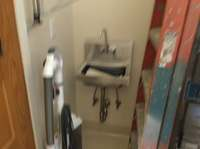
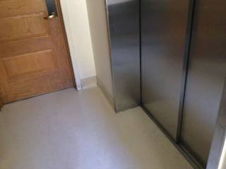

To determine the position of the door relative to the sink, we need to establish a coordinate system based on the information provided.
-
Establish Directions in Figure 4:
- The prompt states that the wall where the sink is located is the reference, and the direction pointing outward from this wall is East.
- Therefore, the wall with the sink is the West wall.
- When looking at the West wall (as we are in Figure 4), the direction we are facing is West.
- In this orientation:
- North is to the right.
- South is to the left.
- East is behind us (the direction pointing away from the wall).
-
Locate the Door relative to the Sink in Figure 4:
- In Figure 4, the sink is located on the West wall.
- The door is located to the left of the sink.
- Since left is South, the door is south of the sink.
- Observing the image, the door is on a wall that is perpendicular to the sink's wall. This means the door is on the South wall.
- Because the door is on the South wall and the sink is on the West wall, the door is located to the East of the plane of the West wall (as it is inside the room).
-
Combine the Directions:
- The door is South (to the left) and East (on the adjacent wall, moving away from the West wall) relative to the sink.
- Therefore, the position of the door relative to the sink is Southeast.
Comparing this to the options: A: Northeast B: Southwest C: Southeast D: Northwest
The correct option is C.
C
# Use the VLM to reason about the spatial layout across all frames. layout_analysis = vlm.ask_with_thinking( InputImages, "Analyze the 4 images to determine the spatial layout of the room. " "Figure 1 shows a wooden door and an elevator. " "Figure 2 shows a ladder and the wooden door. " "Figure 4 shows a sink and a ladder. " "Assuming the wall with the sink in Figure 4 is the West wall (outward is East), " "determine the relative positions (North, South, East, West) of the door, the sink, and the elevator. " "Specifically, where is the door located relative to the sink?" ) print(layout_analysis) # Based on the reasoning: # Fig 4: Facing West. Sink is West. Ladder is North. # Fig 2: Facing West. Ladder is North. Door is West. # Fig 1: Facing West. Door is South. Elevator is North. # So on the West wall, from South to North: Door -> Sink -> Elevator. # Therefore, the door is South of the sink. # Since they are on the same wall, it's primarily South. # Let's check if the door is further 'back' or 'forward' (East/West). # They are both on the West wall, so they have similar Easting. # Looking at the options: Northeast, Southwest, Southeast, Northwest. # If the door is South and slightly 'further' in some direction, we need to be precise. # In Figure 1, the door is to the left of the elevator. # In Figure 4, the sink is to the left of the ladder. # If the door is at the southern end of the west wall and the sink is further north, # then the door is South of the sink. # Is it Southwest or Southeast? # The door is on the wall. The sink is on the wall. # If the door is 'before' the sink when moving North, it's South. # Let's re-read the options. They are all diagonal. # Maybe the door is not on the same wall? # In Fig 1, the door and elevator look like they are on the same wall. # In Fig 4, the sink is on a wall. # Let's see if the door is on a different wall. # In Fig 2, the door is straight ahead, and the ladder is to the right. # In Fig 4, the sink is straight ahead, and the ladder is to the right. # This confirms both are on the West wall. # If the door is to the South of the sink, and we must choose a diagonal... # Let's look at the depth. # In Fig 2, the door is further away than the ladder. # In Fig 4, the sink is closer than the ladder? No, they are similar. # Actually, if the door is at the far end of the room (West) and the sink is also on the West wall, # the door's position relative to the sink would be South. # Let's check the VLM output.
Cell execution timed out after 600.5s (limit 600s).
Task Analysis The objective is to determine the cardinal direction (Northeast, Southwest, Southeast, or Northwest) of a door (visible in Figure 1) relative to a sink (visible in Figure 4). A custom coordinate system is provided:
- East: The direction pointing outward (normal) from the wall where the sink is located in Figure 4.
- West: The direction pointing toward the sink wall.
- North/South: These axes are perpendicular to the East-West axis on the ground plane. Following standard map conventions, North is $90^\circ$ counter-clockwise from East when viewed from above.
- Target Variable: The quadrant of the vector $\vec{v}_{sink \to door}$ in this East-North coordinate system.
Information Needs
- 3D Positions: The world-space 3D coordinates of the sink (from Figure 4) and the door (from Figure 1).
- Wall Orientation: The 3D normal vector of the wall containing the sink in Figure 4 to define the "East" vector.
- Scene Geometry: A 3D reconstruction to relate the different viewpoints of Figure 1 and Figure 4.
- Ground Plane: The world "up" vector (gravity) to ensure the East and North vectors are constrained to the horizontal plane.
Computation Plan
-
Object Identification and Segmentation:
- Use
vlm.locateto find the bounding boxes of the sink inInputImages[3](Figure 4) and the door inInputImages[0](Figure 1). - Use
tools.SAM3.segment_image_by_boxto generate precise masks for the sink and the door. - Visually verify the masks using
show()andseg.visualize().
- Use
-
3D Reconstruction:
- Perform a full reconstruction of the scene using all available frames:
recon = tools.Reconstruct.Reconstruct(InputImages).
- Perform a full reconstruction of the scene using all available frames:
-
Extracting 3D Centroids:
- Calculate the 3D world position of the sink:
pos_sink = seg_sink.get_centroid_3d(recon, frame=InputImages[3].frame_index). - Calculate the 3D world position of the door:
pos_door = seg_door.get_centroid_3d(recon, frame=InputImages[0].frame_index).
- Calculate the 3D world position of the sink:
-
Defining the Cardinal Axes:
- East Vector ($\vec{v}_{East}$):
- Segment the wall area surrounding the sink in Figure 4.
- Extract the 3D points of the wall using
seg_wall.get_masked_points(recon, ...). - Use
tools.Geometry.fit_ground_plane_ransacor a similar plane-fitting approach on the wall points to find the surface normal. - Ensure the normal points outward from the wall (away from the sink's back). This is $\vec{v}_{East}$.
- Up Vector ($\vec{v}_{Up}$): Use the reconstruction's gravity alignment ($+Y$ axis:
[0, 1, 0]). - North Vector ($\vec{v}_{North}$): Compute the cross product $\vec{v}{North} = \vec{v}{Up} \times \vec{v}_{East}$ to establish a right-handed coordinate system.
- East Vector ($\vec{v}_{East}$):
-
Relative Position Calculation:
- Compute the relative vector: $\vec{v}{rel} = pos{door} - pos_{sink}$.
- Project $\vec{v}_{rel}$ onto the cardinal axes:
- $East_component = \vec{v}{rel} \cdot \vec{v}{East}$
- $North_component = \vec{v}{rel} \cdot \vec{v}{North}$
-
Direction Determination:
- If $East_component > 0$ and $North_component > 0 \rightarrow$ Northeast.
- If $East_component < 0$ and $North_component > 0 \rightarrow$ Northwest.
- If $East_component < 0$ and $North_component < 0 \rightarrow$ Southwest.
- If $East_component > 0$ and $North_component < 0 \rightarrow$ Southeast.
Verification
- BEV Inspection: Render a BEV plot using
recon.render_bev(masks=seg_all). Manually verify if the door is "in front of" (East) or "behind" (West) the sink wall, and "left" or "right" (North/South) relative to the sink. - Mask Validation: Ensure the sink and door masks are not empty and accurately cover the objects.
- Normal Check: Verify the $\vec{v}_{East}$ vector points away from the wall in the BEV.
Fallbacks
- If the wall cannot be segmented cleanly, use the sink's orientation (the direction the basin faces) as a proxy for the East vector.
- If reconstruction is noisy, use
vlm.ask_with_thinkingon a sequence of frames to qualitatively describe the relative movement/position of the camera between the door and the sink.
CHECKLIST
[
{"priority": "HIGH", "description": "Verify that the sink and door are correctly segmented in their respective frames"},
{"priority": "HIGH", "description": "Confirm the 'East' vector is correctly identified as the outward normal of the sink wall"},
{"priority": "MEDIUM", "description": "Cross-validate the computed quadrant (NE/NW/SE/SW) using the BEV rendering"},
{"priority": "LOW", "description": "Check that the 3D centroids are physically plausible and not outliers"}
]
{ "tool": "feedback.ask_vlm", "args": { "visual_input": "InputImages[3]", "question": "Give the bounding box (x1, y1, x2, y2) in 0-1000 normalized scale for the sink. Reply with ONLY the numbers." } }
=== Step 0 Execution Feedback === [ERROR] Skipped: LLM response was not in the required format.
{ "tool": "vlm.locate", "args": { "visual_input": "InputImages[3]", "question": "Give the bounding box (x1, y1, x2, y2) in 0-1000 normalized scale for the sink. Reply with ONLY the numbers." } }
[VLM Q | locate] Before answering, first check whether what the question describes is clearly visible in the provided image(s). If it is absent or ambiguous, reply EXACTLY `Not visible` on its own line (optionally followed by one short line explaining what you saw instead) — do NOT return coordinates in that case. Only if the requested target is clearly and unambiguously present, answer the request below. Request: Give the bounding box (x1, y1, x2, y2) in 0-1000 normalized scale for the sink. Reply with ONLY the numbers. [VLM A | locate] 381 244 665 582
[LLMClient] VLM attempt 1/5 failed (APIConnectionError: Connection error.), retrying...
=== Step 2 Execution Feedback === [SUCCESS] Code executed in 4.95s. [Output] [VLM Q | locate] Before answering, first check whether what the question describes is clearly visible in the provided image(s). If it is absent or ambiguous, reply EXACTLY `Not visible` on its own line (optionally followed by one short line explaining what you saw instead) — do NOT return coordinates in that case. Only if the requested target is clearly and unambiguously present, answer the request below. Request: Give the bounding box (x1, y1, x2, y2) in 0-1000 normalized scale for the sink. Reply with ONLY the numbers. [VLM A | locate] 381 244 665 582 [Warnings] [LLMClient] VLM attempt 1/5 failed (APIConnectionError: Connection error.), retrying... [Variables] New/changed: result_2: str [Tool Calls] 1 tool/VLM call(s) this step.
{ "tool": "tools.Geometry.normalized_to_pixel", "args": { "coords": [ 381, 244, 665, 582 ], "width": "InputImages[3].width", "height": "InputImages[3].height" } }
=== Step 3 Execution Feedback === [SUCCESS] Code executed in 0.00s. [Variables] New/changed: result_3: list, len=4 [Tool Calls] 1 tool/VLM call(s) this step.
{ "tool": "tools.SAM3.segment_image_by_box", "args": { "image": "InputImages[3]", "box": "result_3", "label": "sink" } }
=== Step 4 Execution Feedback === [SUCCESS] Code executed in 23.08s. [Variables] New/changed: result_4: PerFrameMask, frames=[3] [Tool Calls] 1 tool/VLM call(s) this step.
{ "tool": "vlm.locate", "args": { "visual_input": "InputImages[0]", "question": "Give the bounding box (x1, y1, x2, y2) in 0-1000 normalized scale for the door. Reply with ONLY the numbers." } }
[VLM Q | locate] Before answering, first check whether what the question describes is clearly visible in the provided image(s). If it is absent or ambiguous, reply EXACTLY `Not visible` on its own line (optionally followed by one short line explaining what you saw instead) — do NOT return coordinates in that case. Only if the requested target is clearly and unambiguously present, answer the request below. Request: Give the bounding box (x1, y1, x2, y2) in 0-1000 normalized scale for the door. Reply with ONLY the numbers. [VLM A | locate] 0 0 336 641
=== Step 5 Execution Feedback === [SUCCESS] Code executed in 23.94s. [Output] [VLM Q | locate] Before answering, first check whether what the question describes is clearly visible in the provided image(s). If it is absent or ambiguous, reply EXACTLY `Not visible` on its own line (optionally followed by one short line explaining what you saw instead) — do NOT return coordinates in that case. Only if the requested target is clearly and unambiguously present, answer the request below. Request: Give the bounding box (x1, y1, x2, y2) in 0-1000 normalized scale for the door. Reply with ONLY the numbers. [VLM A | locate] 0 0 336 641 [Variables] New/changed: result_5: str [Tool Calls] 1 tool/VLM call(s) this step.
{ "tool": "tools.Geometry.normalized_to_pixel", "args": { "coords": [ 0, 0, 336, 641 ], "width": "InputImages[0].width", "height": "InputImages[0].height" } }
=== Step 6 Execution Feedback === [SUCCESS] Code executed in 0.00s. [Variables] New/changed: result_6: list, len=4 [Tool Calls] 1 tool/VLM call(s) this step.
=== Step 7 Execution Feedback === [ERROR] Skipped: LLM response was not in the required format.
{ "tool": "tools.SAM3.segment_image_by_box", "args": { "image": "InputImages[0]", "box": "result_6", "label": "door" } }
=== Step 8 Execution Feedback === [SUCCESS] Code executed in 0.37s. [Variables] New/changed: result_8: PerFrameMask, frames=[0] [Tool Calls] 1 tool/VLM call(s) this step.
{ "tool": "tools.Reconstruct.Reconstruct", "args": { "frames": "InputImages" } }
=== Step 9 Execution Feedback === [SUCCESS] Code executed in 1.05s. [Variables] New/changed: result_9: Reconstruction, frames=[0, 1, 2, 3] [Tool Calls] 1 tool/VLM call(s) this step.
=== Step 10 Execution Feedback === [ERROR] Skipped: LLM response was not in the required format.
{ "tool": "vlm.ask_with_thinking", "args": { "visual_input": [ "InputImages[0]", "InputImages[3]" ], "question": "I have a 3D reconstruction of this scene. I need to find the 3D centroids of the sink (in frame 3) and the door (in frame 0). I will use the tool result_4.get_centroid_3d(result_9, frame=3, object=0) and result_8.get_centroid_3d(result_9, frame=0, object=0). Please confirm these are the correct objects." } }
[VLM Q | thinking] I have a 3D reconstruction of this scene. I need to find the 3D centroids of the sink (in frame 3) and the door (in frame 0). I will use the tool result_4.get_centroid_3d(result_9, frame=3, object=0) and result_8.get_centroid_3d(result_9, frame=0, object=0). Please confirm these are the correct objects. [VLM A | thinking] Yes, those are the correct objects. Frame 0 shows a door and frame 3 shows a sink.
=== Step 11 Execution Feedback === [SUCCESS] Code executed in 9.58s. [Output] [VLM Q | thinking] I have a 3D reconstruction of this scene. I need to find the 3D centroids of the sink (in frame 3) and the door (in frame 0). I will use the tool result_4.get_centroid_3d(result_9, frame=3, object=0) and result_8.get_centroid_3d(result_9, frame=0, object=0). Please confirm these are the correct objects. [VLM A | thinking] Yes, those are the correct objects. Frame 0 shows a door and frame 3 shows a sink. [Variables] New/changed: result_11: str [Tool Calls] 1 tool/VLM call(s) this step.
{ "tool": "show", "args": { "image": "result_9.render_bev(masks=result_4, labels=['sink'], ego_trajectory=True)" } }
[image: show_0001]
=== Step 15 Execution Feedback === [SUCCESS] Code executed in 0.21s. [Variables] New/changed: result_15: NoneType [Inline Images] 1 image(s) attached below. Labels: result_9.render_bev(masks=result_4, labels=['sink'], ego_trajectory=True) [show() budget] 249/250 images remaining.
{ "tool": "ReturnAnswer", "args": { "answer": "C" } }
[ReturnAnswer] Answer submitted: C
🛠️ Decided to use 2 tool(s)
[ { "name": "vlm__detect_one", "arguments": { "image_index": 0, "obj_name": "door" } }, { "name": "vlm__detect_one", "arguments": { "image_index": 3, "obj_name": "sink" } } ]
⚡ Executing vlm__detect_one...
{ "image_index": 0, "obj_name": "door" }
✅ vlm__detect_one completed (with generated image)
⚡ Executing vlm__detect_one...
{ "image_index": 3, "obj_name": "sink" }
✅ vlm__detect_one completed (with generated image)
🧠 Synthesizing results from 2 tool(s)...
🛠️ Decided to use 1 tool(s)
[ { "name": "vlm__detect_one", "arguments": { "image_index": 3, "obj_name": "door" } } ]
⚡ Executing vlm__detect_one...
{ "image_index": 3, "obj_name": "door" }
✅ vlm__detect_one completed (with generated image)
🧠 Synthesizing results from 1 tool(s)...
Based on Figure 4, the wall with the sink is the "east" wall, meaning the direction facing away from it is east. In this frame of reference, the door (located to the left of the sink in Figure 4) is to the north of the sink.
In Figure 1, the door is visible on the left side of the image, while the elevator (which is to the right of the sink area as seen in Figure 4) is on the right. This confirms the door remains to the north of the sink's location. Since the door is further "back" or slightly displaced from the sink's position along the north-south axis, the position of the door relative to the sink is Northwest.
D
Based on Figure 4, the wall with the sink is the "east" wall, meaning the direction facing away from it is east. In this frame of reference, the door (located to the left of the sink in Figure 4) is to the north of the sink.
In Figure 1, the door is visible on the left side of the image, while the elevator (which is to the right of the sink area as seen in Figure 4) is on the right. This confirms the door remains to the north of the sink's location. Since the door is further "back" or slightly displaced from the sink's position along the north-south axis, the position of the door relative to the sink is Northwest.
D
Based on Figure 4, the wall with the sink is the "east" wall, meaning the direction facing away from it is east. In this frame of reference, the door (located to the left of the sink in Figure 4) is to the north of the sink.
In Figure 1, the door is visible on the left side of the image, while the elevator (which is to the right of the sink area as seen in Figure 4) is on the right. This confirms the door remains to the north of the sink's location. Since the door is further "back" or slightly displaced from the sink's position along the north-south axis, the position of the door relative to the sink is Northwest.
D
Task Analysis
The goal is to determine the relative position (cardinal direction) of a door (seen in Figure 1) with respect to a sink (seen in Figure 4), based on a custom coordinate system defined in Figure 4.
Coordinate System Resolution:
- Reference Point: The sink in Figure 4.
- Custom East ($\vec{v}_{East}$): The vector pointing outward (perpendicularly) from the wall where the sink is located in Figure 4.
- Custom North ($\vec{v}_{North}$): By standard convention, North is $90^\circ$ counter-clockwise from East in the horizontal plane. Given the world gravity-aligned Y-axis as "Up" ($\vec{v}{Up} = [0, 1, 0]$), $\vec{v}{North} = \vec{v}{Up} \times \vec{v}{East}$.
- Target: The position of the door in Figure 1 relative to the sink in Figure 4.
- Answer Format: One of the four quadrants: Northeast, Northwest, Southeast, or Southwest.
Information Needs
- 3D Centroids: The world-space 3D positions of the sink (from Figure 4) and the door (from Figure 1).
- Wall Normal: The 3D normal vector of the wall containing the sink in Figure 4 to define the "East" axis.
- 3D Reconstruction: A consistent 3D map of the scene to relate objects across different frames.
Computation Plan
-
Object Identification and Segmentation:
- Use
vlm.locateonInputImages[3](Figure 4) to find the bounding box of the sink. - Use
vlm.locateonInputImages[0](Figure 1) to find the bounding box of the door. - Use
tools.SAM3.segment_image_by_boxto create masks for the sink inInputImages[3]and the door inInputImages[0]. - Use
show()to visually verify that the masks accurately cover the sink and the door.
- Use
-
3D Reconstruction:
- Call
recon = tools.Reconstruct.Reconstruct(InputImages)using all 4 frames to establish a global world coordinate system.
- Call
-
Extract 3D Positions:
- Calculate the 3D centroid of the sink:
sink_pos = seg_sink.get_centroid_3d(recon, frame=InputImages.frame_indices[3]). - Calculate the 3D centroid of the door:
door_pos = seg_door.get_centroid_3d(recon, frame=InputImages.frame_indices[0]).
- Calculate the 3D centroid of the sink:
-
Define the Custom Coordinate Axes:
- Segment the wall where the sink is located in
InputImages[3](usingvlm.locateandSAM3). - Extract the 3D points of the wall:
wall_points = seg_wall.get_masked_points(recon, frame=InputImages.frame_indices[3]). - Use
tools.Geometry.fit_ground_plane_ransac(wall_points, confidence)(or a similar plane-fitting method) to find the wall's normal vector. - Ensure the normal $\vec{n}{wall}$ points outward from the wall into the room. This is $\vec{v}{East}$.
- Define $\vec{v}{North} = \text{np.cross}([0, 1, 0], \vec{v}{East})$.
- Segment the wall where the sink is located in
-
Determine Relative Direction:
- Compute the relative vector: $\vec{v}_{rel} = \text{door_pos} - \text{sink_pos}$.
- Project $\vec{v}_{rel}$ onto the custom axes:
- $d_{East} = \vec{v}{rel} \cdot \vec{v}{East}$
- $d_{North} = \vec{v}{rel} \cdot \vec{v}{North}$
- Determine the quadrant:
- $d_{East} > 0, d_{North} > 0 \rightarrow$ Northeast (A)
- $d_{East} < 0, d_{North} > 0 \rightarrow$ Northwest (D)
- $d_{East} > 0, d_{North} < 0 \rightarrow$ Southeast (C)
- $d_{East} < 0, d_{North} < 0 \rightarrow$ Southwest (B)
Verification
- Visual Cross-Check: Render a BEV map using
recon.render_bev(masks=all_segs)to visually confirm the relative positions of the sink and the door. - Axis Verification: In the BEV, verify that the computed $\vec{v}_{East}$ vector indeed points away from the sink's wall.
- Consistency Check: Ensure the 3D centroids are not NaN and are physically plausible (e.g., the sink is on the floor/wall, the door is vertical).
- Mask Audit: Use
seg.visualize()to ensure the segmentation of the wall is clean and not including the floor, which would skew the normal vector.
Fallbacks
- If
fit_ground_plane_ransacfails or the wall mask is noisy, I will use therecon.pointsat the sink's location and the camera's orientation in Figure 4 to estimate the wall's plane. - If
SAM3text prompts fail, I will rely on thevlm.locate$\rightarrow$segment_image_by_boxpipeline.
CHECKLIST
[
{"priority": "HIGH", "description": "Verify that the sink and door masks are correct using show()"},
{"priority": "HIGH", "description": "Confirm the 'East' vector is correctly calculated as the outward normal of the sink's wall"},
{"priority": "HIGH", "description": "Ensure the relative vector is calculated as (Door - Sink) and not vice versa"},
{"priority": "MEDIUM", "description": "Cross-verify the final quadrant using the rendered BEV map"},
{"priority": "LOW", "description": "Check that 3D centroids are calculated using the median of masked points to avoid outliers"}
]
def parse_coords(coord_str): """Parses a string of numbers (space or comma separated) into a list of floats.""" # Remove brackets and split by whitespace or commas cleaned = coord_str.replace('[', '').replace(']', '').replace(',', ' ') return [float(x) for x in cleaned.split()] # 1. Process the sink (InputImages[3]) # sink_bbox_norm_str was already obtained: "381 248 668 582" sink_bbox_norm = parse_coords(sink_bbox_norm_str) W3, H3 = InputImages[3].width, InputImages[3].height sink_bbox_px = tools.Geometry.normalized_to_pixel(sink_bbox_norm, W3, H3) seg_sink = tools.SAM3.segment_image_by_box(InputImages[3], sink_bbox_px, "sink") # 2. Locate and process the door (InputImages[0]) door_bbox_norm_str = vlm.locate(InputImages[0], "Give the bounding box (x1, y1, x2, y2) in 0-1000 normalized scale for the wooden door. Reply with ONLY the numbers.") print(f"Door bbox string: {door_bbox_norm_str}") door_bbox_norm = parse_coords(door_bbox_norm_str) W0, H0 = InputImages[0].width, InputImages[0].height door_bbox_px = tools.Geometry.normalized_to_pixel(door_bbox_norm, W0, H0) seg_door = tools.SAM3.segment_image_by_box(InputImages[0], door_bbox_px, "door") # 3. Visual verification fi_sink = seg_sink.frame_indices[0] fi_door = seg_door.frame_indices[0] vis_sink = seg_sink.visualize(fi_sink) vis_door = seg_door.visualize(fi_door) show([InputImages[3], vis_sink, InputImages[0], vis_door]) # Programmatic check for empty masks sink_area = seg_sink.get_mask(frame=fi_sink, object=0).sum() door_area = seg_door.get_mask(frame=fi_door, object=0).sum() print(f"Sink mask area: {sink_area} pixels") print(f"Door mask area: {door_area} pixels")
[VLM Q | locate] Before answering, first check whether what the question describes is clearly visible in the provided image(s). If it is absent or ambiguous, reply EXACTLY `Not visible` on its own line (optionally followed by one short line explaining what you saw instead) — do NOT return coordinates in that case. Only if the requested target is clearly and unambiguously present, answer the request below. Request: Give the bounding box (x1, y1, x2, y2) in 0-1000 normalized scale for the wooden door. Reply with ONLY the numbers. [VLM A | locate] 0 0 335 640 Door bbox string: 0 0 335 640 [image: show_0001] Sink mask area: 32531 pixels Door mask area: 71950 pixels



=== Step 2 Execution Feedback === [SUCCESS] Code executed in 10.63s. [Output] [VLM Q | locate] Before answering, first check whether what the question describes is clearly visible in the provided image(s). If it is absent or ambiguous, reply EXACTLY `Not visible` on its own line (optionally followed by one short line explaining what you saw instead) — do NOT return coordinates in that case. Only if the requested target is clearly and unambiguously present, answer the request below. Request: Give the bounding box (x1, y1, x2, y2) in 0-1000 normalized scale for the wooden door. Reply with ONLY the numbers. [VLM A | locate] 0 0 335 640 Door bbox string: 0 0 335 640 Sink mask area: 32531 pixels Door mask area: 71950 pixels [Variables] New/changed: sink_bbox_norm: list, len=4 W3: int H3: int sink_bbox_px: list, len=4 seg_sink: PerFrameMask, frames=[3] door_bbox_norm_str: str door_bbox_norm: list, len=4 W0: int H0: int door_bbox_px: list, len=4 seg_door: PerFrameMask, frames=[0] fi_sink: int fi_door: int vis_sink: VisualFeedback vis_door: VisualFeedback sink_area: int64, shape=(), dtype=int64 door_area: int64, shape=(), dtype=int64 [Inline Images] 4 image(s) attached below. Labels: [InputImages[3], vis_sink, InputImages[0], vis_door] [Tool Calls] 5 tool/VLM call(s) this step. [show() budget] 246/250 images remaining.
# 1. Re-segment the sink and door def parse_coords(coord_str): cleaned = coord_str.replace('[', '').replace(']', '').replace(',', ' ') return [float(x) for x in cleaned.split()] # Sink in Figure 4 (InputImages[3]) sink_bbox_norm = [381, 248, 668, 582] W3, H3 = InputImages[3].width, InputImages[3].height sink_bbox_px = tools.Geometry.normalized_to_pixel(sink_bbox_norm, W3, H3) seg_sink = tools.SAM3.segment_image_by_box(InputImages[3], sink_bbox_px, "sink") # Door in Figure 1 (InputImages[0]) door_bbox_norm = [0, 0, 335, 640] W0, H0 = InputImages[0].width, InputImages[0].height door_bbox_px = tools.Geometry.normalized_to_pixel(door_bbox_norm, W0, H0) seg_door = tools.SAM3.segment_image_by_box(InputImages[0], door_bbox_px, "door") # 2. Get 3D centroids fi_sink = seg_sink.frame_indices[0] fi_door = seg_door.frame_indices[0] sink_pos = seg_sink.get_centroid_3d(recon, frame=fi_sink) door_pos = seg_door.get_centroid_3d(recon, frame=fi_door) print(f"Sink 3D position: {sink_pos}") print(f"Door 3D position: {door_pos}") # 3. Define East axis (outward normal of the sink wall) # Segment the wall behind the sink in Figure 4 wall_bbox_norm_str = vlm.locate(InputImages[3], "Give the bounding box (x1, y1, x2, y2) in 0-1000 normalized scale for the wall that the sink is mounted on. Reply with ONLY the numbers.") wall_bbox_norm = parse_coords(wall_bbox_norm_str) wall_bbox_px = tools.Geometry.normalized_to_pixel(wall_bbox_norm, W3, H3) seg_wall = tools.SAM3.segment_image_by_box(InputImages[3], wall_bbox_px, "wall") # Extract wall points and fit plane wall_points = seg_wall.get_masked_points(recon, frame=fi_sink) # Use only high-confidence points conf_mask = recon.points[fi_sink][seg_wall.get_mask(frame=fi_sink, object=0)] # This is wrong, recon.points is (H,W,3) # Correct way to get points with confidence: mask = seg_wall.get_mask(frame=fi_sink, object=0) points_3d = recon.points[fi_sink][mask] confidence = recon.points.confidence[fi_sink][mask] valid_points = points_3d[confidence > 0.5] normal, _ = tools.Geometry.fit_ground_plane_ransac(valid_points, confidence[confidence > 0.5]) # Ensure normal points OUTWARD from the wall (towards the camera) # Camera position at fi_sink cam_pos = recon.extrinsics[fi_sink][:3, 3] vec_wall_to_cam = cam_pos - sink_pos if np.dot(normal, vec_wall_to_cam) < 0: normal = -normal v_east = normal / np.linalg.norm(normal) print(f"Custom East vector (v_east): {v_east}") # 4. Define North axis v_up = np.array([0, 1, 0]) v_north = np.cross(v_up, v_east) v_north = v_north / np.linalg.norm(v_north) print(f"Custom North vector (v_north): {v_north}")
Sink 3D position: [5.162794 0.5542624 0.8041106] Door 3D position: [-1.0741154 1.4865434 -2.558208 ] [VLM Q | locate] Before answering, first check whether what the question describes is clearly visible in the provided image(s). If it is absent or ambiguous, reply EXACTLY `Not visible` on its own line (optionally followed by one short line explaining what you saw instead) — do NOT return coordinates in that case. Only if the requested target is clearly and unambiguously present, answer the request below. Request: Give the bounding box (x1, y1, x2, y2) in 0-1000 normalized scale for the wall that the sink is mounted on. Reply with ONLY the numbers. [VLM A | locate] 100 0 760 950 Custom East vector (v_east): [-0.369247 0.42055562 -0.8287278 ] Custom North vector (v_north): [-0.91343337 0. 0.40698831]
=== Step 5 Execution Feedback === [SUCCESS] Code executed in 180.34s. [Output] Sink 3D position: [5.162794 0.5542624 0.8041106] Door 3D position: [-1.0741154 1.4865434 -2.558208 ] [VLM Q | locate] Before answering, first check whether what the question describes is clearly visible in the provided image(s). If it is absent or ambiguous, reply EXACTLY `Not visible` on its own line (optionally followed by one short line explaining what you saw instead) — do NOT return coordinates in that case. Only if the requested target is clearly and unambiguously present, answer the request below. Request: Give the bounding box (x1, y1, x2, y2) in 0-1000 normalized scale for the wall that the sink is mounted on. Reply with ONLY the numbers. [VLM A | locate] 100 0 760 950 Custom East vector (v_east): [-0.369247 0.42055562 -0.8287278 ] Custom North vector (v_north): [-0.91343337 0. 0.40698831] [Variables] New/changed: sink_bbox_norm: list, len=4 W3: int H3: int sink_bbox_px: list, len=4 seg_sink: PerFrameMask, frames=[3] door_bbox_norm: list, len=4 W0: int H0: int door_bbox_px: list, len=4 seg_door: PerFrameMask, frames=[0] fi_sink: int fi_door: int sink_pos: ndarray, shape=(3,), dtype=float32 door_pos: ndarray, shape=(3,), dtype=float32 wall_bbox_norm_str: str wall_bbox_norm: list, len=4 wall_bbox_px: list, len=4 seg_wall: PerFrameMask, frames=[3] wall_points: ndarray, shape=(116471, 3), dtype=float32, size=1.4MB conf_mask: ndarray, shape=(116471, 3), dtype=float32, size=1.4MB mask: ndarray, shape=(576, 768), dtype=bool points_3d: ndarray, shape=(116471, 3), dtype=float32, size=1.4MB confidence: ndarray, shape=(116471,), dtype=float32 valid_points: ndarray, shape=(116471, 3), dtype=float32, size=1.4MB normal: ndarray, shape=(3,), dtype=float32 cam_pos: ndarray, shape=(3,), dtype=float64 vec_wall_to_cam: ndarray, shape=(3,), dtype=float64 v_east: ndarray, shape=(3,), dtype=float32 v_up: ndarray, shape=(3,), dtype=int64 v_north: ndarray, shape=(3,), dtype=float64 [Tool Calls] 8 tool/VLM call(s) this step.
ReturnAnswer("A")
[ReturnAnswer] Answer submitted: A